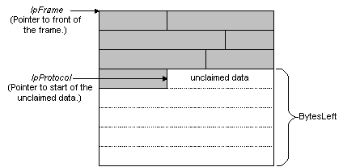

Network Monitors calls the RecognizeFrame function of a parser to determine that the parser recognizes the unclaimed data of a frame. The unclaimed data may be at the start of a frame, but typically, unclaimed data is located in the middle of a frame. The following illustration shows unclaimed data located in the middle of a frame.

Network Monitor provides the following information when it calls the RecognizeFrame function:
When the parser DLL determines that unclaimed data starts with the parser protocol, the parser DLL determines where the next protocol starts, and which protocol follows. The parser DLL functions in the following conditional ways:
To implement RecognizeFrame
Test to determine that you recognize the protocol.
If you recognize unclaimed data and you know which protocol follows, set pProtocolStatus to PROTOCOL_STATUS_NEXT_PROTOCOL, set phNextProtocol to a pointer that points to the handle for the next protocol, and then return a pointer to the next protocol.
–or–
If you recognize unclaimed data and you do not know which protocol follows, set pProtocolStatus to PROTOCOL_STATUS_RECOGNIZED, and then return a pointer to the next protocol.
–or–
If you recognize unclaimed data and your protocol is the last protocol in a frame, set pProtocolStatus to PROTOCOL_STATUS_CLAIMED, and then return NULL.
–or–
If you do not recognize unclaimed data, set pProtocolStatus to PROTOCOL_STATUS_NOT_RECOGNIZED, and then return the pointer that is passed to you in pProtocol.
The following is a basic implementation of RecognizeFrame.
#include <windows.h>
LPBYTE BHAPI MyProtocol_RecognizeFrame( HFRAME hFrame,
LPBYTE pMacFrame,
LPBYTE pProtocol,
DWORD MacType,
DWORD BytesLeft,
HPROTOCOL hPrevProtocol,
DWORD nPreviuosProtOffset,
LPDWORD pProtocolStatus,
LPHPROTOCOL phNextProtocol,
LPDWORD InstData)
// Test unclaimed data.
// If unclaimed data is recognized, but you do not know what follows.
*pProtocolStatus = PROTOCOL_STATUS_RECOGNIZED;
return pProtocol + MY_PROTOCOL_LENGTH;
// If unclaimed data is recognized and you know what follows.
*pProtocolStatus = PROTOCOL_STATUS_NEXT_PROTOCOL;
phNextProtocol = GetProtocolFromTable(
hTable,
ItemToFind,
lpInstData);
return pProtocol + MY_PROTOCOL_LENGTH;
// If unclaimed data is recognized and the protocol is the last
// protocol in the frame.
*pProtocolStatus = PROTOCOL_STATUS_CLAIMED;
return NULL;
// If the unclaimed data is not recognized.
*pProtocolStatus = PROTOCOL_STATUS_NOT_RECOGNIZED;
return *pProtocol;
}
Â
Â